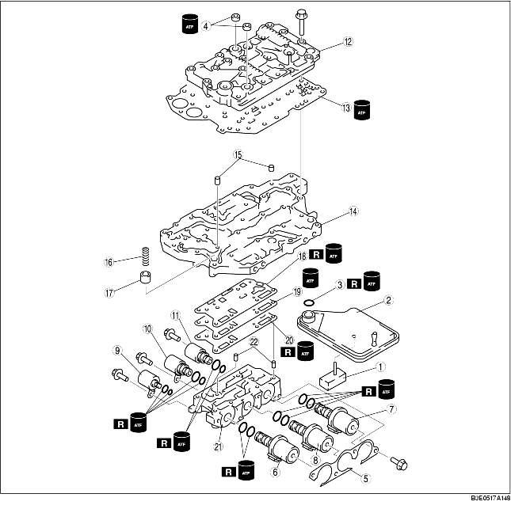
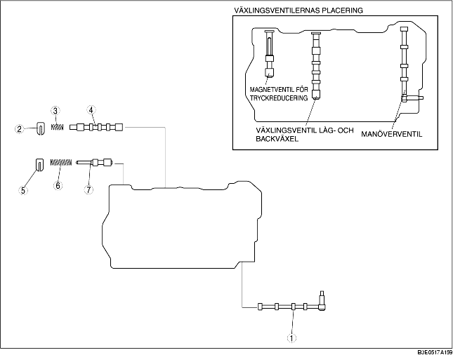
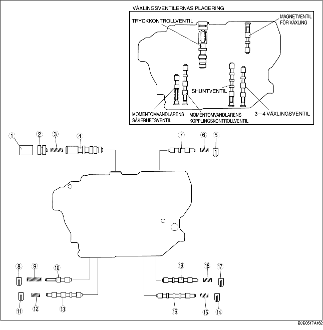
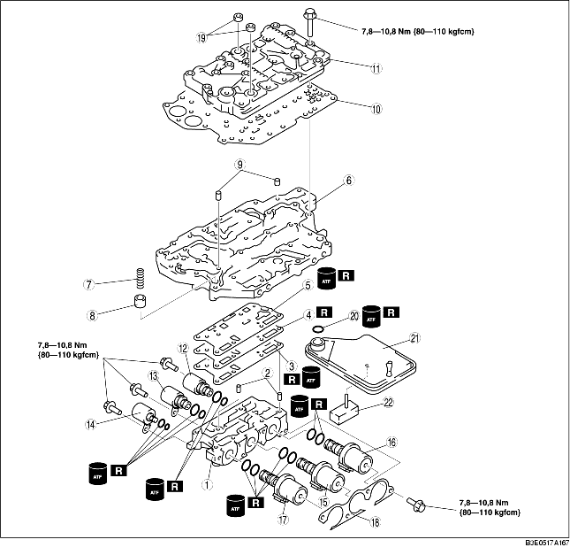

1. Ta isär i den ordning som tabellen anger.
2. Placera och identifiera alla detaljer som tas bort så att de sätts tillbaks på rätt ställe vid monteringen.
3. Rengör de demonterade delarna med rengöringsmedel och torka dem med tryckluft. Använd tryckluft för att blåsa rent alla hål och kanaler.

1. Ta bort oljesilen.
2. Demontera O-ringen från oljesilen.
3. Ta bort tätningen.
4. Demontera fästet.
5. Ta bort växlingsventiler A, B, C.
6. Ta bort magnetventil för tryckkontroll, växlingsventil D, E.
7. Lossa bultarna jämnt i det mönster som visas.
8. Demontera det övre regulatorventilhuset.
9. Ta bort tätplåten.
10. Demontera huvudregulatorventilhuset.
11. Ta bort rörpinnar, tryckändringsackumulatorns fjäder och tryckändringsackumulatorn från huvudregulatorventilhuset.
12. Ta bort packning D, skiljeplatta och packning C.
13. Ta bort rörpinnarna.
1. Ta isär i den ordning som tabellen anger.
2. Rengör alla delar och hål med tryckluft och smörj in dem med automatäxellådsolja innan montering.
3. Montera i omvänd ordning jämfört med demonteringen.

|
1
|
Manuell ventil
|
|
2
|
Hållare
|
|
3
|
Fjäder för växlingsventilen för låg- och back
|
|
4
|
Växlingsventil för låg- och back
|
|
5
|
Hållare
|
|
6
|
Fjäder för reduceringsventilen
|
|
7
|
Reduceringsventil
|
1. Mät fjäderns fria längd.
2. Montera reduceringsventil, fjädern och hållaren.
3. Montera växlingsventil för låg- och back samt dess fjäder och hållare.
4. Montera manuell ventil.
1. Ta isär i den ordning som tabellen anger.
2. Rengör alla delar och hål med tryckluft och smörj in dem med automatäxellådsolja innan montering.
3. Montera i omvänd ordning jämfört med demonteringen.

1. Mät fjäderns fria längd.
2. Montera 3-4 växlingsventil samt fjäder och hållare för 3-4 växlingsventil.
3. Montera bypassventilen, fjädern och hållaren,
4. Montera momentomvandlarens kopplingskontrollventil, fjäder och hållare.
5. Montera momentomvandlarens säkerhetsventil, fjädern och hållaren.
6. Montera växlingsventil, fjädern och hållaren.
7. Montera tryckregulatorventilen, fjädern och hållaren.
1. Kontrollera att alla delarna är rena och fria från damm och andra småpartiklar.
2. Stryk på automatväxellådsolja på alla delar.
3. Montera i omvänd ordning jämfört med demonteringen.

1. Montera rörpinnar i regulatorventilhuset.
2. Använd nya packning, C, skiljeplatta och ny packning D på regulatorventilhuset,
3. Montera tryckändringsackumulatorn och dess fjäder i huvudregulatorventilhuset.
Tryckändringsackumulatorfjäderns fria längd
|
Ytterdiameter
mm {tum}
|
Fri längd
mm {tum}
|
Antal varv
|
Tråddiameter
mm {tum}
|
|---|---|---|---|
|
11,0 {0,433}
|
23,0 {0,906}
|
6,6
|
1,5 {0,059}
|
4. Montera rörpinnar i huvudregulatorventilhuset.
5. Placera huvudregulatorventilhuset på regulatorventilhuset.
6. Placera tätplåten på huvudregulatorventilhuset.
7. Placera övre regulatorventilhuset på huvudregulatorventilhuset.
8. Dra åt bultarna för hand enligt figuren. Varje bulttyp har olika bokstäver på huvudet. Placera bultarna så att bokstäverna stämmer överens med de bokstäver som är instämplade bredvid varje hål på ventilhuset.
Bultarnas identifikation
|
Identifieringsmärke
|
Längd (mätt under skallen) mm {tum}
|
|---|---|
|
A
|
30 {1,181}
|
|
B
|
40 {1,575}
|
|
Inget märke
|
60 {2,362}
|
9. Dra åt bultarna gradvis och jämnt i den ordning som framgår av bilden.
10. Montera växlingsventil D, E och magnetventil för tryckkontroll.
11. Montera växlingsventiler A, B, C.
12. Montera fästet.
13. Montera tätningen.
14. Stryk på automatväxellådsolja på den nya O-ringen och montera den på oljesilen.
15. Montera oljesilen i huvudregulatorventilhuset.